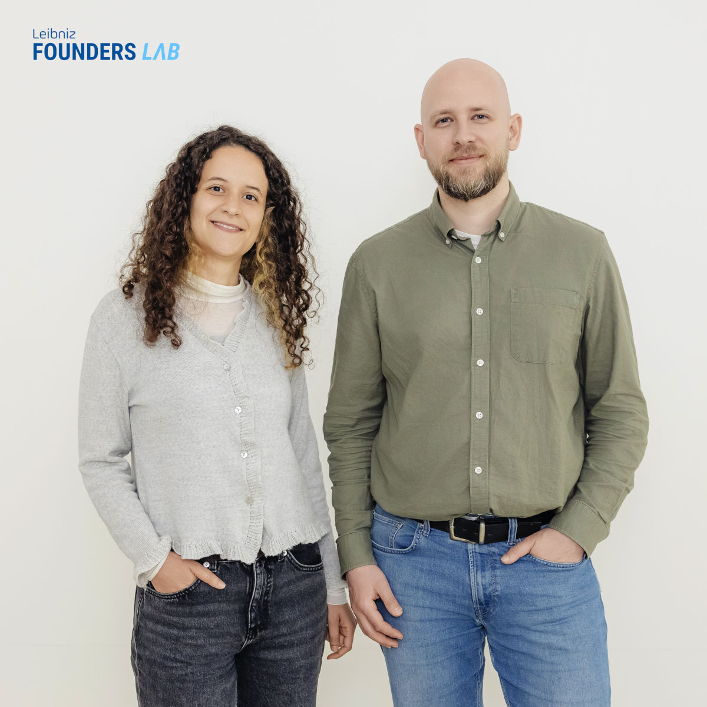

Research philosophy
Physics poses the questions, convex geometry gives them structure, machine learning solves them at scale.
I work on convex optimization, mostly semidefinite and linear programming. A surprising number of questions in quantum information turn into the same shape of problem: you write the question as a semidefinite or linear program, often as a convergent hierarchy of them, and then solve it to show what is possible and what is ruled out. I use this to certify entanglement, to ask whether gravity has to be quantum, and to decide which correlations a quantum network can produce. When the programs grow too large to solve head on, I train neural networks to solve them. One toolbox, many questions.
Projects
-
Solving optimization at scale
We use differentiable programming and neural networks to solve large semidefinite and linear programs. Currently applied to entanglement detection, other applications to follow soon!
Selected for the competitive Leibniz Founders Lab 2026 to develop this toward a startup.
-
Is gravity quantum?
I work on indirectly inferring the existence of gravity-mediated entanglement (GME) from incomplete experimental data. Our goal is to test whether gravity must be quantum, with the relevant experiments now being designed.
-
Convex cones and de Finetti hierarchies
These are my workhorse methods: a general recipe that turns hard problems into a sequence of semidefinite or linear programs, provably converging to the exact answer. I construct new hierarchies, study how fast they converge, and reuse the same toolbox across quantum gravity and quantum networks.
-
Quantum information
Measurement incompatibility, Bell nonlocality, and contextuality: when quantum features must appear, and how to witness them.
Most of these results rely on convex cones and convex optimization methods, but sometimes they are hidden in the appendices.
Future visionI want to advance quantum gravity, quantum networks, and other applied verticals by solving the largest semidefinite and linear programs ever attempted.
Research group
I currently supervise:
- 1 PhD student: Yasmin Bougammoura
- 5 MSc students
- 1 completed MSc thesis: Tim Achenbach, whose first paper appeared in Letters in Mathematical Physics
I am always glad to hear from motivated students and prospective collaborators.

Lectures: quantum nonlocality
Quantum nonlocality is a peculiar phenomenon that, by definition, has no explanation in classical physics, and it is often a necessary ingredient for quantum advantage over classical computers and classical cryptography. In this lecture series on YouTube I introduce it through entanglement, violations of Bell inequalities, and correlations in quantum networks, explain the fundamental results on detecting nonlocality, and review some of its applications.
By the end you should know enough to read current papers on quantum nonlocality, or to start a research project of your own.
Places I have visited
Don't see your institution on the map? I'd be glad to visit. Get in touch about a talk or a collaboration.